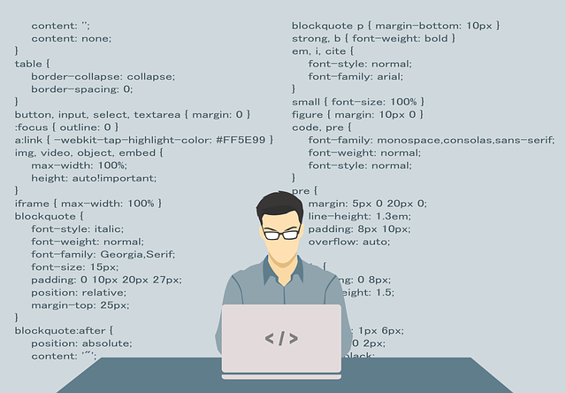

We believe security software like Kicksecure needs to remain Open Source and independent. Would you help sustain and grow the project? Learn more about our 11 year success story and maybe DONATE!

Kicksecure Build Configuration. APT Repository, Onion Sources, APT Cache, VM Settings, Skip Steps, Source Code Changes
Note: All of the following build configuration steps are optional.
Introduction
Usually the build configuration does not need to be changed. Kicksecure built from source code comes with safe defaults. The derivative APT Repository will not be used.
The most interesting build configurations (Terminal-Only, NoDefaultApps etc.) are documented in the following chapters.
If you are interested, click on Expand on the right.
If build configurations were used earlier, it might be better to delete the build configuration folder. A few example filenames may have changed since the last build.
sudo rm -r /etc/buildconfig-dist.dAlternatively, experts can manually examine the /etc/buildconfig-dist.d folder and change its contents to suit their preferences.
/etc/buildconfig-dist.d is a modular flexible .d style configuration folder.
Less popular build configurations are documented in the buildconfig.d folder and on the Dev/Source_Code_Intro#Build_Configuration page, but it is less user-friendly.
To avoid typos, it is best to copy and paste text when creating build configuration files. Take care that editors do not capitalize variable names which are supposed to be lower case during copy and paste procedures.
Platforms Choice
Advanced users can create 32-bit instead of 64-bit builds.
If you are interested, click on Expand on the right.
To build Kicksecure 14 32-bit, add the following build parameter.
--arch i386- kFreeBSD is entirely untested and most likely needs additional work (see footnotes). [3]
- Kicksecure for arm64 development discussion: https://forums.whonix.org/t/whonix-for-arm64-raspberry-pi-rpi/723
- Generally speaking, 64-bit builds cannot be created if running a 32-bit host kernel. See footnotes. [4] [5]
Project APT Repository
Kicksecure:
Kicksecure APT Repository is disabled by default
[6] for builds from source code for reasons of Trust. Users can decide to update
Kicksecure Debian packages by building them from source code (greater
security). Alternatively, Kicksecure APT repository can be enabled right
after building or after booting the build for the first time (greater
convenience) using Kicksecure repository tool. To use the latter
method which sacrifices security for convenience, click on Expand on the
right side.
Do you want to opt-in Kicksecure APT Repository?
The easy way to add Kicksecure stable repository the
following command line option can be used.
--repo true
Other settings can be set using an environment variable or build configuration. Below are examples using an environment variable.
DERIVATIVE_APT_REPOSITORY_OPTS='--enable --repository stable' DERIVATIVE_APT_REPOSITORY_OPTS='--enable --repository testers' DERIVATIVE_APT_REPOSITORY_OPTS='--enable --repository developers' DERIVATIVE_APT_REPOSITORY_OPTS='--enable --codename trixie'
Add an environment variable as one normally does on that specific
Linux platform. For example, to enable the Kicksecure stable repository
during build, you could set DERIVATIVE_APT_REPOSITORY_OPTS
by interjecting it between sudo and the
./derivative-maker command. Below is an example. Do not use
[...]. Replace it with other chosen build parameters (such
as --build, --target etc.) after
./derivative-maker.
sudo DERIVATIVE_APT_REPOSITORY_OPTS='--enable --repository stable' ./derivative-maker [...]
APT Onion Build Sources
For better build security, you can also use onions apt sources for building Kicksecure.
If you are interested, click on Expand on the right.
This does not ensure all build process networking will be torified!
Kicksecure 14 and above only:
--connection onion1) Also chapter below has to be considered.
2) See also: https://forums.whonix.org/t/derivative-maker-fails-with-onion-sources/20200
Torified or Host APT Cache
Using an apt cache will greatly improve build speed when building several times in a row (e.g. when debugging, during development). Kicksecure build script sets up an apt cache by default.
If you are interested in a torified apt-cacher-ng or host apt-cacher-ng, click on Expand on the right.
torified apt-cacher-ng
Notes:
- The following torified apt-cacher-ng setup only has to be applied,
if you are building using onion apt sources using
--connection onion. - When building inside Whonix, this is not required.
 Note, this neither torifies all of the build script's connections nor
hides Tor from your ISP! See [Broken-ExtLink--no-url-was-provided].
Note, this neither torifies all of the build script's connections nor
hides Tor from your ISP! See [Broken-ExtLink--no-url-was-provided].
The goal of this is to torify apt-cacher-ng using
torsocks so it will be able to connect to onions.
Note: This is currently broken. No fix available. Undocumented.
1. Install apt-cacher-ng,
torsocks and tor.
sudo apt install apt-cacher-ng torsocks tor2. Create folder apt-cacher-ng systemd drop-in
folder /lib/systemd/system/apt-cacher-ng.service.d.
sudo mkdir -p /lib/systemd/system/apt-cacher-ng.service.d3. Open file
/lib/systemd/system/apt-cacher-ng.service.d/50_user.conf in
an editor with administrative ("root") rights.
1 Select your platform.

2 Notes.
- Sudoedit guidance: See Open File
with Root Rights for details on why using
sudoeditimproves security and how to use it. - Editor requirement: Close Featherpad (or the chosen text
editor) before running the
sudoeditcommand.
3 Open the file with root rights.
sudoedit /lib/systemd/system/apt-cacher-ng.service.d/50_user.conf

2 Notes.
- Sudoedit guidance: See Open File
with Root Rights for details on why using
sudoeditimproves security and how to use it. - Editor requirement: Close Featherpad (or the chosen text
editor) before running the
sudoeditcommand. - Template requirement: When using Kicksecure-Qubes, this must be done inside the Template.
3 Open the file with root rights.
sudoedit /lib/systemd/system/apt-cacher-ng.service.d/50_user.conf
4 Notes.
- Shut down Template: After applying this change, shut down the Template.
- Restart App Qubes: All App Qubes based on the Template need to be restarted if they were already running.
- Qubes persistence: See also Qubes Persistence
- General procedure: This is a general procedure required for Qubes and is unspecific to Kicksecure-Qubes.

2 Notes.
- Example only: This is just an example. Other tools could achieve the same goal.
- Troubleshooting and alternatives: If this example does not work for you, or if you are not using Kicksecure, please refer to Open File with Root Rights.
3 Open the file with root rights.
sudoedit /lib/systemd/system/apt-cacher-ng.service.d/50_user.conf
4. Add. [7]
[Service] ExecStart= ExecStart=torsocks /usr/sbin/apt-cacher-ng SocketPath=/run/apt-cacher-ng/socket -c /etc/apt-cacher-ng ForeGround=1
5. Save.
6. Reload systemd.
sudo systemctl daemon-reload
7. Restart apt-cacher-ng.
sudo systemctl restart apt-cacher-ng
8. Done.
The process of torification of apt-cacher-ng has been completed.
9. Broken!
/etc/tor/torsocks.conf add:
AllowInbound 1 AllowOutboundLocalhost 1
But this is also insufficient.
sudo journalctl -f -u apt-cacher-ng
shows errors:
WARNING torsocks[17645]: Config file not found: /etc/tor/torsocks.conf. Using default for Tor (in config_file_read() at config-file.c:583)
Couldn't listen on socket: Operation not permitted
Error creating socket: Function not implementedNo fix available. Help welcome.
host apt-cacher-ng
This is probably only useful for developers. Most users will not need the complexity of an apt-cacher-ng running outside of the VM which runs derivative-maker or on another computer.
Be sure to have a firewall, so the whole internet cannot use the apt-cacher-ng service.
When building inside a non-Whonix VM, an apt cache can be used on the host. In that case, adjust the IP accordingly and manually test that it is reachable. When building inside a (Kicksecure) VM, just install the apt cache inside the VM and point to a localhost apt cache.
Prepend REPO_PROXY=http://127.0.0.1:3142
before the build command.
Replace the IP 127.0.0.1 with the IP address of your
host. For security reasons, this should only be done over LAN and not
over the internet.
sudo REPO_PROXY=http://127.0.0.1:3142 ./derivative-maker ...VM Settings
If building VMs, settings such as image size, RAM, filesystem, hostname and password can be customized.
If you are interested, press on expand on the right side.
This is only relevant for VM builds.
Several examples are below. Values can be changed to suit user preferences.
VirtualBox's --vmsize option (virtual RAM).
--vmram 128VirtualBox's --vram option (virtual video RAM).
--vram 12grml-debootstrap's --vmsize option.
--vmsize 200Ggrml-debootstrap's --filesystem option.
--file-system ext4grml-debootstrap's --hostname option. [8]
--hostname hostgrml-debootstrap's --password option.
--os-password changemegrml-debootstrap's --debopt option.
--debopt "--verbose"Build Variables Changes
It is possible to add build configuration files snippets which can change build variables.
Build Configuration Folders:
You can drop configuration file either in:
buildconfig.dor in/etc/buildconfig-dist.d../buildconfig.dfolder.
Files should have the file extension .conf.
Method 2. is recommended for users.
- Contains examples. It is more difficult to use. [9] Rather use the following.
sudo mkdir --parents /etc/buildconfig-dist.d- When
/home/user/Kicksecureis your Kicksecure source folder, you could use/home/user/buildconfig.das your Kicksecure build configuration folder. It is easier to use, since you don't have to git commit your build config files.
Below is an example how to use method 2.
sudo mkdir /etc/buildconfig-dist.d
Open file /etc/buildconfig-dist.d/50_user.conf in an
editor with administrative ("root") rights.
1 Select your platform.

2 Notes.
- Sudoedit guidance: See Open File
with Root Rights for details on why using
sudoeditimproves security and how to use it. - Editor requirement: Close Featherpad (or the chosen text
editor) before running the
sudoeditcommand.
3 Open the file with root rights.
sudoedit /etc/buildconfig-dist.d/50_user.conf

2 Notes.
- Sudoedit guidance: See Open File
with Root Rights for details on why using
sudoeditimproves security and how to use it. - Editor requirement: Close Featherpad (or the chosen text
editor) before running the
sudoeditcommand. - Template requirement: When using Kicksecure-Qubes, this must be done inside the Template.
3 Open the file with root rights.
sudoedit /etc/buildconfig-dist.d/50_user.conf
4 Notes.
- Shut down Template: After applying this change, shut down the Template.
- Restart App Qubes: All App Qubes based on the Template need to be restarted if they were already running.
- Qubes persistence: See also Qubes Persistence
- General procedure: This is a general procedure required for Qubes and is unspecific to Kicksecure-Qubes.

2 Notes.
- Example only: This is just an example. Other tools could achieve the same goal.
- Troubleshooting and alternatives: If this example does not work for you, or if you are not using Kicksecure, please refer to Open File with Root Rights.
3 Open the file with root rights.
sudoedit /etc/buildconfig-dist.d/50_user.conf
Add. (Replace it with whatever build configuration variable you wish to set.)
Example 1.
export DERIVATIVE_APT_REPOSITORY_OPTS='--enable --repository stable'
Example 2.
export tbb_version=13.0.1
Save.
Done.
Skip Steps
Developers can speed up the build and skip sanity tests.
If you are interested, click on Expand on the right.
--sanity-tests falseSource Code Changes
This is only required if changes were made to the derivative-maker source folder! In that case click on Expand on the right.
This is not required if only a customized build configuration was added to the /etc/buildconfig-dist.d folder.
If changes were made to the derivative-maker source code, it is the easiest to use the following build parameter.
--allow-uncommitted trueOr if not building from a git tag, it is the easiest to use the following build parameter.
--allow-untagged trueOtherwise, changes must be committed to git first, before creating a git tag.
Footnotes
- State of official 64-bit builds.
- Don't get confused by the term
amd64. It runs on both, Intel and AMD.amd64is only how Debian names the kernel. It works equally well on Intel and AMD. - kFreeBSD (32-bit).
--arch kfreebsd-i386 --kernel kfreebsd-image --headers kfreebsd-headerskFreeBSD (64-bit).
--arch kfreebsd-amd64 --kernel kfreebsd-image --headers kfreebsd-headers - https://github.com/grml/grml-debootstrap/pull/13
- In this case, try installing the packages linux-image-amd64 and linux-headers-amd64 on your host, then boot the amd64 kernel by choosing it in the boot menu. The whole system does not require re-installation; just be sure to boot with an amd64 kernel. Alternatively, consider to re-install your host using amd64.
- Since Kicksecure
7.3.3 - * The first ExecStart=
is to disable the default
ExecStartin/lib/systemd/system/apt-cacher-ng.service. * This is based on /lib/systemd/system/apt-cacher-ng.service . * Only torsocks is prepended in front of /usr/sbin/apt-cacher-ng * No other changes. - The dist-base-files package will change this later on.
- Since you would have to either: * A) git commit your build config files, OR, * B) See chapter source code changes below.
- This is because
..means "one level below this folder".